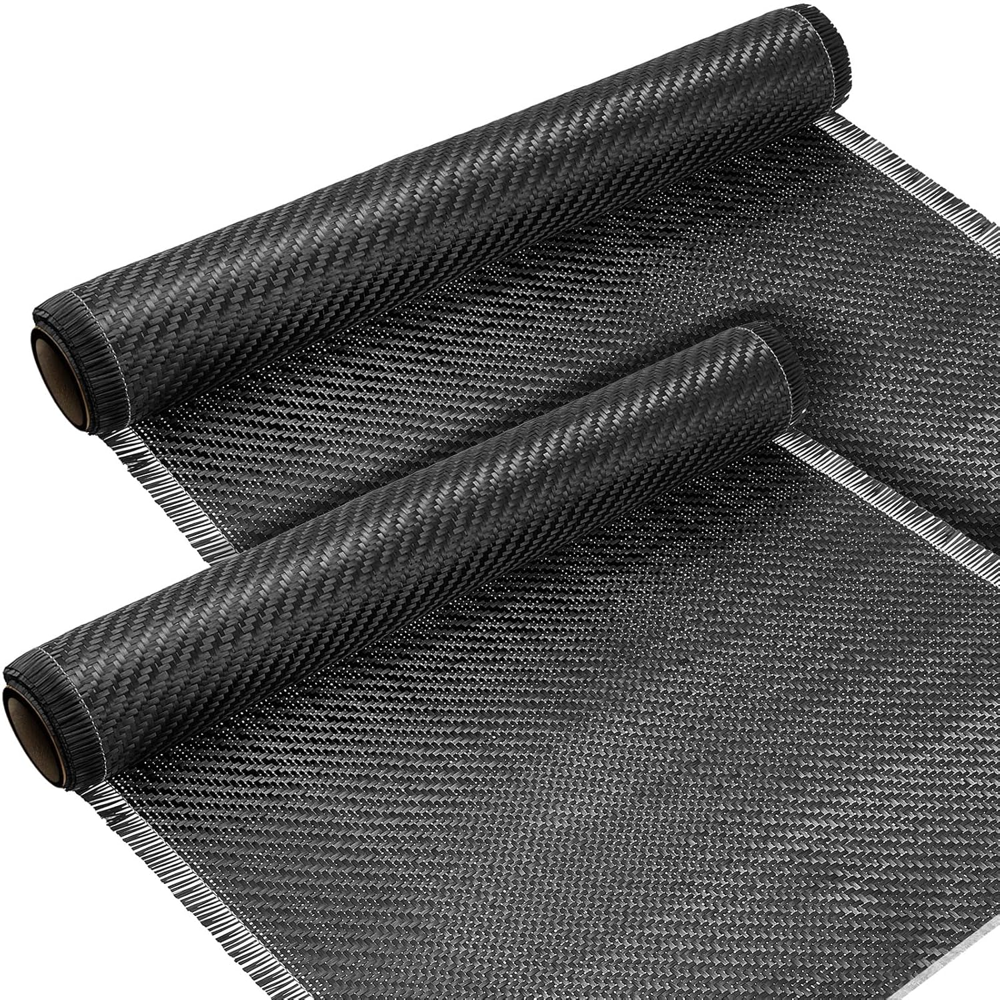
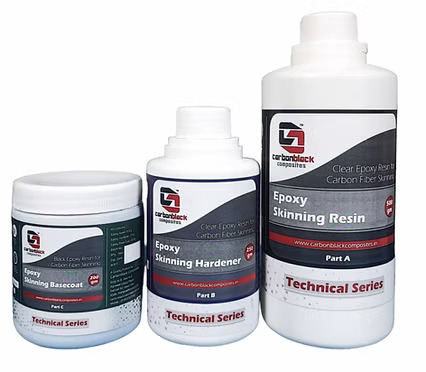
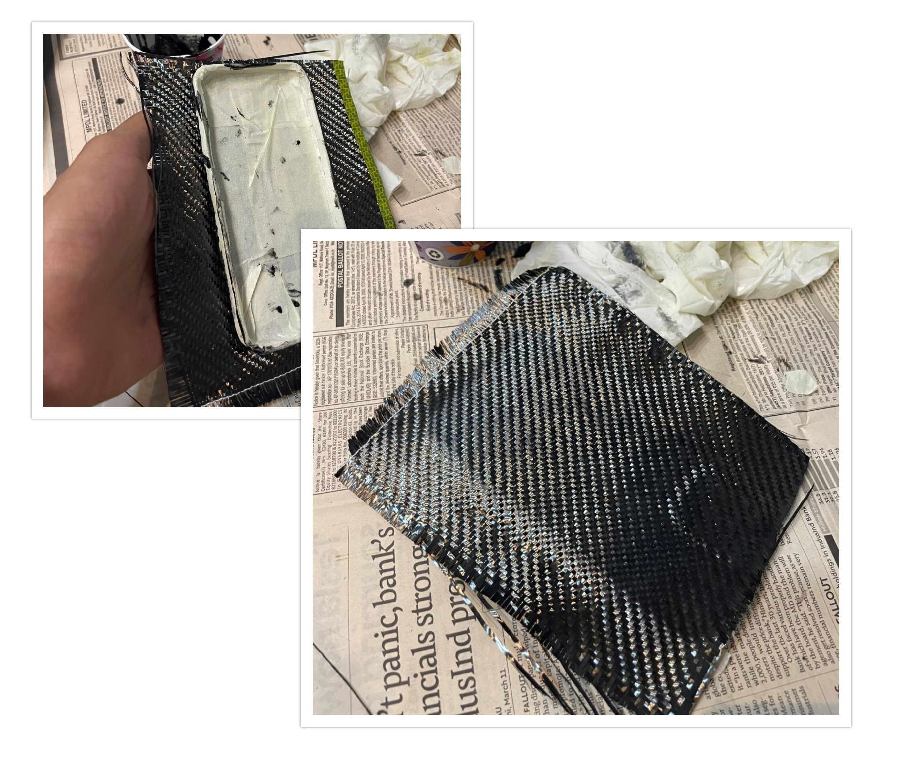
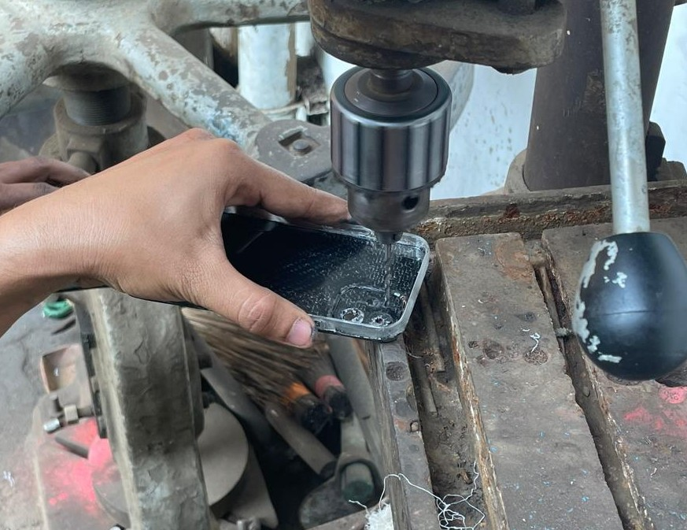
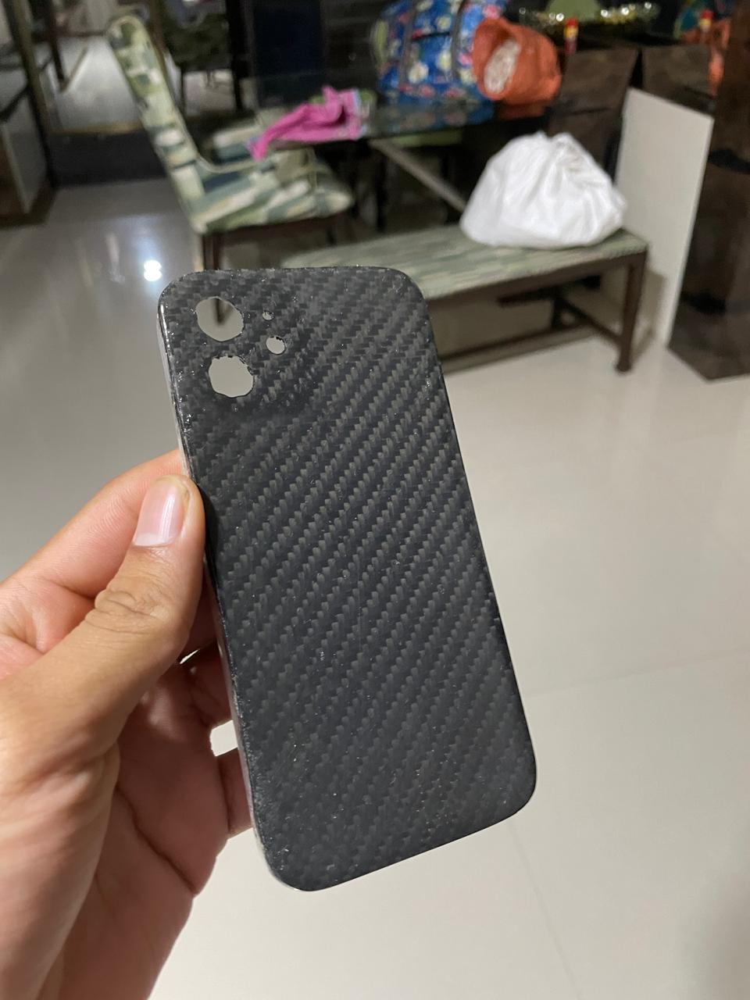
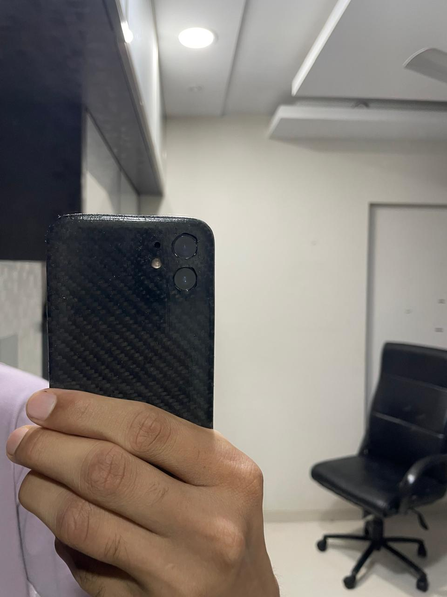
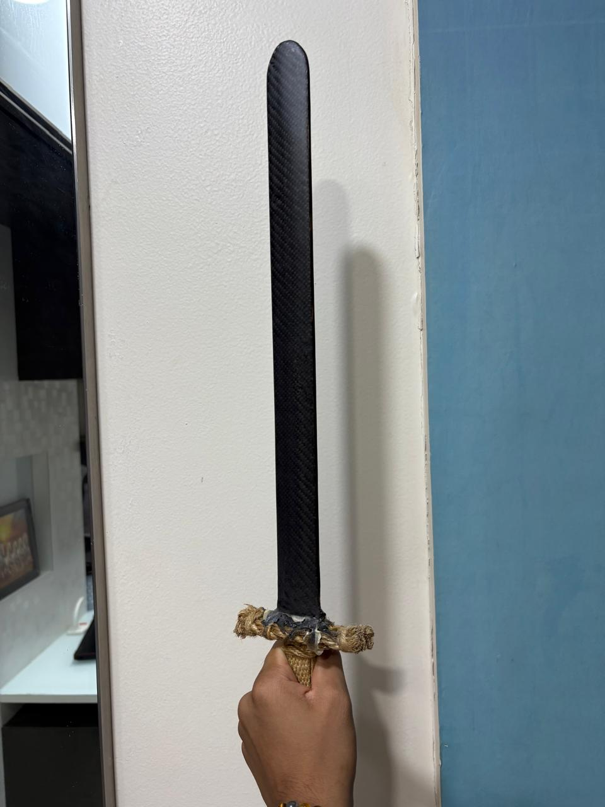
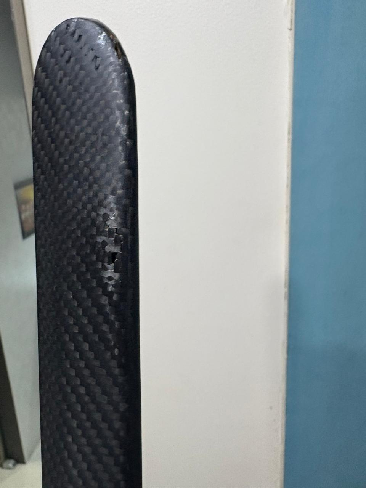
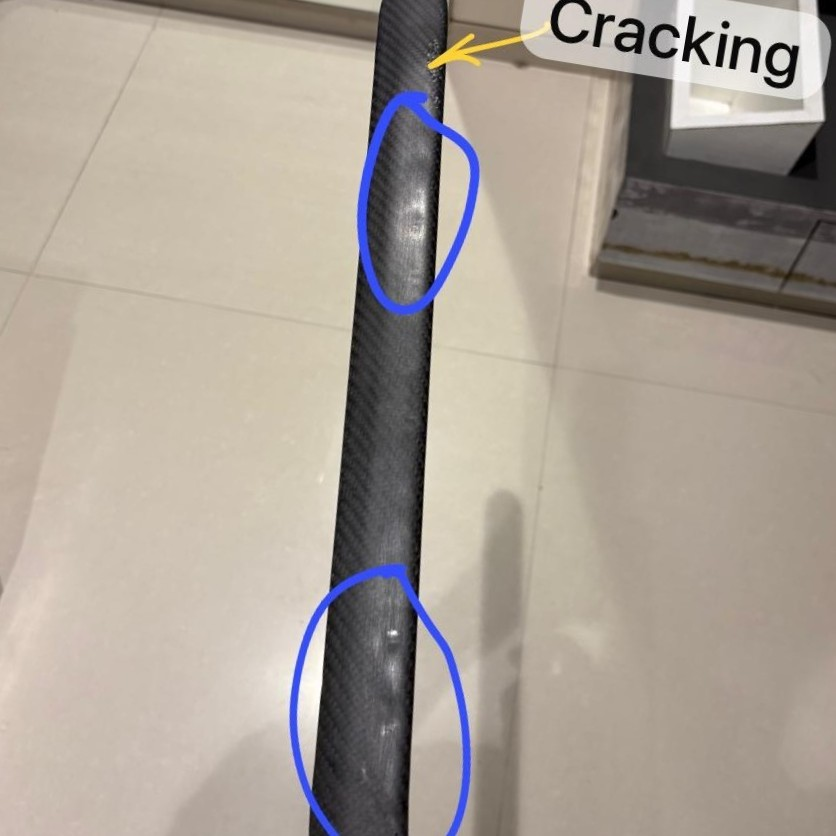

Project Overview
The project focused on applying a carbon fiber skin to a mobile cover and a wooden sword, providing practical exposure to composite manufacturing techniques. The process involved precise fiber alignment, epoxy resin application, controlled curing, and polishing to achieve a smooth, high-gloss finish. Emphasis was placed on controlling fiber orientation, minimising defects such as air bubbles and resin pooling, and ensuring strong adhesion, which strengthened hands-on skills in composite layup and finishing.
Technical Approach
Materials used
- Carbon fiber fabric: 240 gsm uni-directional, 2×2 twill
- Epoxy basecoat, epoxy resin, and epoxy hardener (3:1 mixing ratio)
- Sand paper (100–2000 grit), wooden polish, and rubbing compound


Key techniques
- Accurate alignment and orientation of carbon fiber fabric, with surface preparation and basecoat application to promote adhesion
- Resin layering with active defect minimisation, followed by progressive sanding between coats
- Surface finishing and polishing trials to reach a high-gloss result
Process steps
- Mounted the mobile cover and wooden sword securely, sanded the surfaces for adhesion, and applied an epoxy basecoat (3:1 mix) through to its tacky stage
- Laid the carbon fiber fabric over the tacky surface, trimmed excess material, and allowed it to bond before applying the first resin coat, cured then sanded at 100–150 grit
- Applied three additional resin coats over 36 hours, sanding between coats from 100 up to 800 grit, then a final coat progressively sanded through 800, 1200, 1500, and 2000 grit before polishing


Results & Analysis
Key takeaways: phone cover
- Carbon fiber was applied only to the back; the sides were painted black due to wrapping difficulty
- Resin layering and sanding gave good adhesion, with the polished finish improved by switching to a rubbing compound after a failed attempt with furniture polish
- Multiple resin layers made the cover noticeably heavier, contributing to increased phone heating and blocked network signal reception


Key takeaways: wooden sword
- Served purely as a practice piece after the phone cover, with no functional use
- Resin application was harder on wood, since bumps and pores trapped resin unevenly, and incorrect orientation during curing caused resin to pool into thick patches
- Over-sanding to even out a thick resin patch cracked the carbon fiber layer. This was left unfixed deliberately, as a personal reminder to sand gradually and check orientation before curing on future projects


